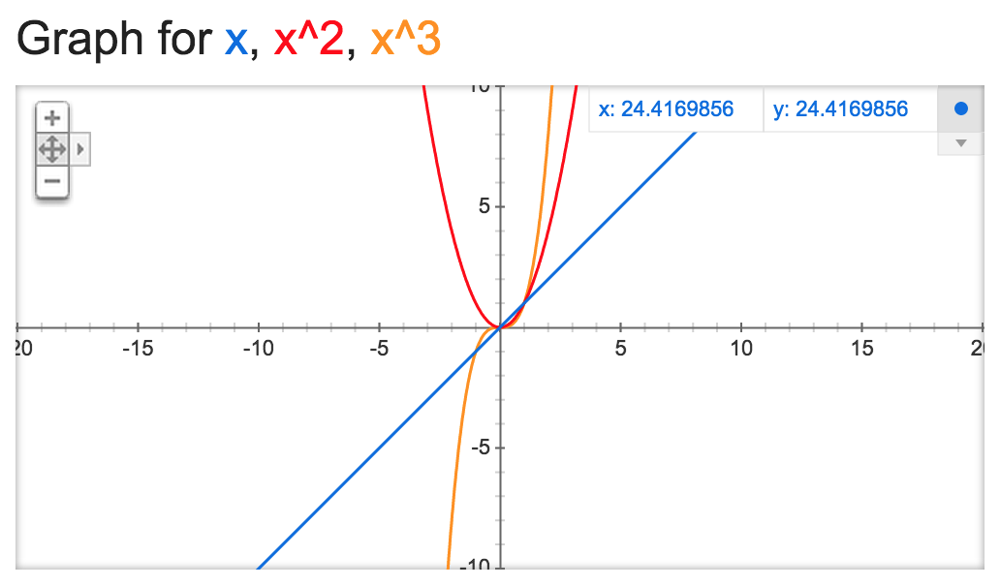
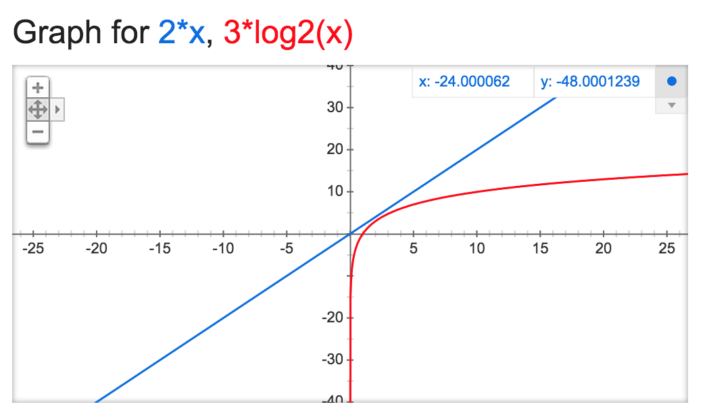
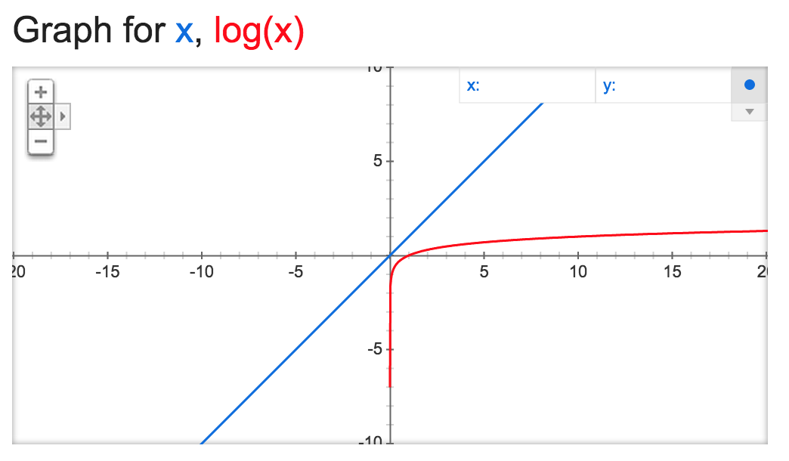

What is Big-O?
(Plus a little bit on linear vs binary searches)
August 5, 2015
Big-O is a measure that represents the complexity (and thus efficiency) of a computer algorithm. Okay, that was easy, blog finished.
But seriously, Big-O is a subject that any programmer who hopes to write efficient programs needs to understand. This week, the designers of the Dev Bootcamp curriculum have granted us students the freedom to discuss a topic of our choice, and for me it had to be Big-O.
Big-O and Order (When Big)
Big-O is in essence a mathematical concept that measures the order of an equation as it approaches a limit, that is, when the input gets really, really big. As you may or may not remember from algebra class, the order of a function (or more accurately, the degree of a polynomial) is determined by its largest exponent, and the larger the exponent, the faster the y values climb:
The orange graph, y = x3, is a third-degree polynomial, and it rises faster than either y = x2 or y = x. Zooming out further would show this effect even more clearly.
But what does this have to do with programming? And might it be possible to discuss this without using an abstract example from math classes of bygone years?
Big-O and Programming
To see how this applies to programming, let’s return to our graph (last time, I promise) where the x value represents the number of things we need to process and the y value represents the number of steps it takes to process them. If there are only 2 things we need to process, it doesn’t make too much of a difference in terms of computer times (usually on the scale of nanoseconds) whether our algorithm takes 2 steps (y = x), 4 steps (y = x2), or 8 steps (y = x3) to accomplish this.
But at 10 things to process, the differences become much starker: 10, 100, and 1000 steps respectively. Bump up our number to 1000 or 1000000 things to process and performance times (and/or data usage) quickly become a major issue. Once we start talking about huge numbers like one million or one billion, we’re testing our algorithm to the (mathematical) limit and examining its “worst-case performance scenario.”
A Children’s Game and Big-O
I don’t know about you, but I can vividly remember from childhood playing a game where one kid would think of a number between 1 and 100, and the other kids would see how quickly they could guess it, using “higher” and “lower” as cues. I could immediately tell which of my friends (and siblings) were mathematically inclined by analyzing their guessing patterns. Those who were mathematically inclined would guess according to an optimized pattern, whereas those who were not guessed haphazardly without a clear method.
Guessing haphazardly (or linearly from 1 to 100) could end up taking 100 turns to establish the correct number. Whereas I would always be able to guess within 7 guesses (50 -> 75 -> 63 -> 57 -> 60 -> 62 -> 61 being one such worst-case scenario).
Now let’s return to our computer—surely there’s not much difference in performance between taking 100 rounds steps or 7 rounds, but what if I were thinking of a number between 1 and 1,000,000,000 or, shifting gears a bit, thinking of a specific Facebook user from the 1.5 billion users that have active accounts. This is the limit case where we can really see the underlying efficiency of an algorithm.
Linear Search vs Binary Search
You might be surprised to learn that the two ways that children try to guess a number between 1 and 100 (haphazardly/linearly or by homing in using midpoints) closely mimic two different ways to perform computer searches for sorted data collections.
A linear search takes a total of two steps each time it examines a data point—one step to increment the index, and a second step to perform a comparison. An abstract version in Ruby for searching arrays might look something like this:
def linear_search(array, target)
array.each_with_index do |element, index|
if element == target
return index
end
end
return nil
end
A binary search requires a total of three steps each time it looks at a data point—one step to calculate the midpoint (choose the index), another step to perform the comparison, and then another step to redefine the boundaries of the search. A generic Ruby method for performing binary search on sorted arrays (this won’t work on unsorted arrays) that uses recursion would look like:
def binary_search(array, target, min, max)
if max < min
return nil
else
mid = min + ((max - min) / 2)
if array[mid] > target
binary_search(array, target, min, mid-1)
elsif array[mid] < target
binary_search(array, target, mid+1, max)
else
return mid
end
end
end
And yet, despite the fact the linear search takes 2 steps each round and the binary search takes 3, the binary search method is much, much, much quicker for the same reason that the child who uses midpoints to guess a number between 1 and 100 finds his answer much more efficiently.
If we needed to search through an array of one million (n) sorted names, in the worst-case scenario it would take the linear search two million (2 * n) steps. Whereas the binary search would take twenty rounds in the worst-case scenario, or 60 total steps (3 * log2n = 3 * 19.931569 ≅ 60). (The number of rounds in the binary search shows base 2 logarithmic growth.) Even with smaller array sizes, the binary search proves to be more efficient:
To translate our results into more human terms, if it took a (very, very slow) computer one second to perform each step, it would take up to 11.5 days to perform a linear search of one million names, whereas the binary search would take a minute at the most! This shows the utmost importance of writing efficient algorithms when dealing with big data collections.
Big-O Notation
When we’re talking about Big-O, we’re talking about limit cases, so when we’re dealing with numbers like 1,000,000,000 there’s really not too much difference between n and 3n or log10n and log2n. There is, however, a huge difference between n2, n, and log n (1018, 109, and 9, respectively).
That’s why when we derive Big-O for an algorithm, we only worry about the highest order that exists in the function, and don’t concern ourselves with coefficients, constants, or “lower-order” variables (for example, 3x2 + 6x + 10 simplifies to x2 for Big-O purposes).
So, in the case of linear search, its Big-O is written as O(n), while the Big-O of binary search would simply be O(log n). Again, we can graphically see where a Big-O of O(log n) is much better than O(n)—recall that x represents the number of data points and y represents steps taken (time and/or memory cost):
Further Resources
Of course, the linear and logarithmic cases for the two search methods explored above are not the only possible orders for Big-O. Eric Rowell’s site provides a great overview in both chart and graphical form of the Big-O of various algorithm types as well as what their “cost/complexity” curves look like. More in-depth, scientific explanations of Big-O as it pertains to mathematics and computational complexity are available in Computer Science textbooks and elsewhere on the web in the usual places (Stack Overflow, Wikipedia, etc.). But I hope that this blog post has at least provided you, my readers, will a solid foundational understanding of what Big-O is and why it matters. Onwards and upwards, fellow Big-O’ers!